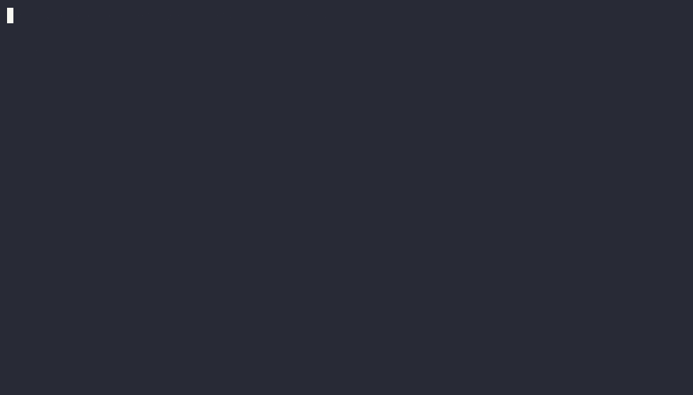

agent-guardrails
Your AI coding agent will eventually try terraform destroy. This hook stops it, and tells the agent what to do instead.

Agent runs: terraform destroy BLOCKED [terraform-destroy]: Destroys or changes infrastructure without a human reading the plan. Instead: Run terraform plan -out=tfplan, show the plan, and let a person run apply. Agent runs: terraform plan -out=tfplan allowed
Try it here
This runs the same patterns as the hook, in your browser. Nothing is sent anywhere.
Install in 30 seconds
git clone https://github.com/gerardrecinto/agent-guardrails ~/.agent-guardrails cd ~/.agent-guardrails python3 -m guardrails check "terraform destroy" # see it block, runs nothing python3 -m guardrails install # adds the hook to ~/.claude/settings.json
Needs Python 3.10 or newer and nothing else. The installer keeps a backup of your settings file. Run /hooks in Claude Code to confirm it is listed.
What it blocks
| Rule | Why | Instead |
|---|
Allowed on purpose: rm -rf node_modules, terraform plan, kubectl get, git push --force-with-lease, cat .env.example.
How it compares
| Option | Good at | agent-guardrails |
|---|---|---|
| Claude Code permission rules | Built in. Decide which tools and commands run without asking. | They say no. This also tells the agent the safer command, with a test per rule. Use both. |
| Sandboxes and containers | The real boundary on what a command can touch. | Only a seatbelt on top. Sandbox if you can. |
| Guardrails AI, NeMo Guardrails, LlamaFirewall | Check model inputs and outputs. | Different job. This only looks at shell commands and secret files. |
| Joltrin | Checks that earlier steps happened before a risky action. | This says "never run this". Joltrin says "only after these steps". |
Described from their public documentation, not tests run here. They are more mature in their own areas. This one is small, has no dependencies and installs in 30 seconds.
What it does not do
It is a seatbelt, not a sandbox. It reads command text, so an agent that writes a script and runs that, or builds a command from variables, can get past it. Use real permissions and scoped credentials for hard limits. I have not yet run it inside a live Claude Code session beyond the hook protocol, and I have not tested Cursor or Codex.